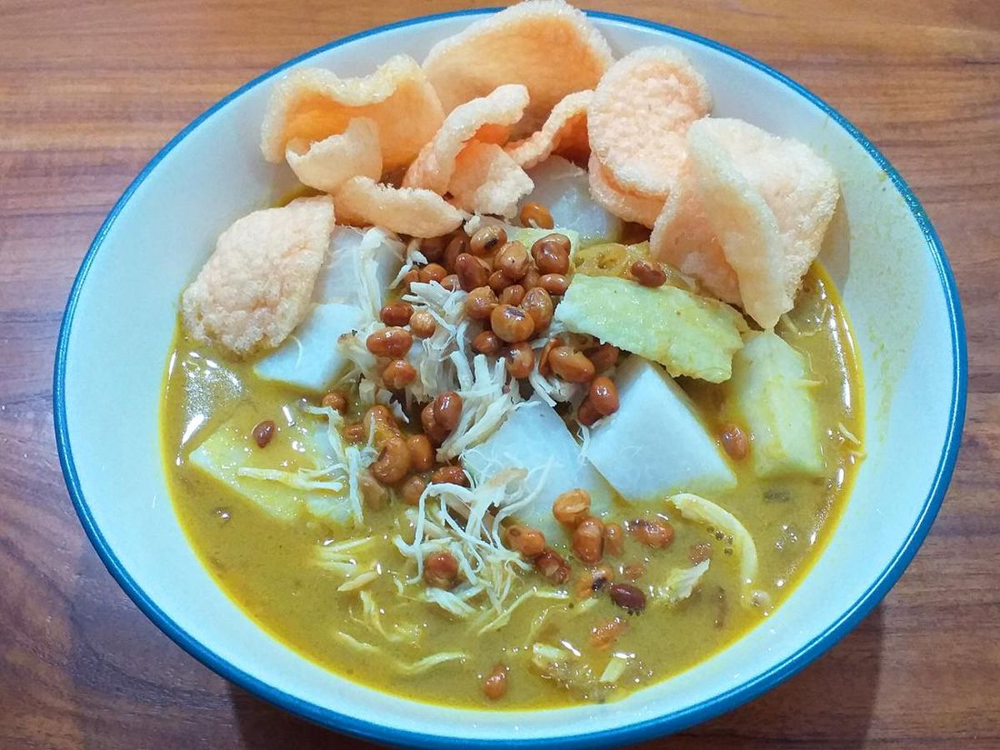

Lontong Kari
Makanan yang sering dijual di bandung. makanan ini berisi Lontong yang diberikan kuah kari dan biasanya memiliki isian telur, labu siam, dan ayam suwir
cara Membuat Lontong Kari:
1. Rebus daging dan sandung lamur hingga matang. Buang busa kotorannya yang muncul ke permukaan. Tiriskan daging, potong-poton tipis atau bentuk dadu.
2. Sangrai bumbu halus hingga harum, ulek halus. Tumis hingga aromanya sedap.
3. Masukkan semua bumbu utuh, oseng terus bumbu hingga matang.
4. Masukkan daging, aduk rata dengan bumbu. Tuang 200 ml kaldu sapi dari bekas air rebusan daging yang sudah disaring. masak hingga air berkurang dan bumbu meresap ke dalam daging.
5. Tuang santan kental dan cair, aduk rata. Masak hingga mendidih sambil diaduk sesekali agar merata. Tes rasa, jika sudah pas dan masakan sudah matang, angkat.